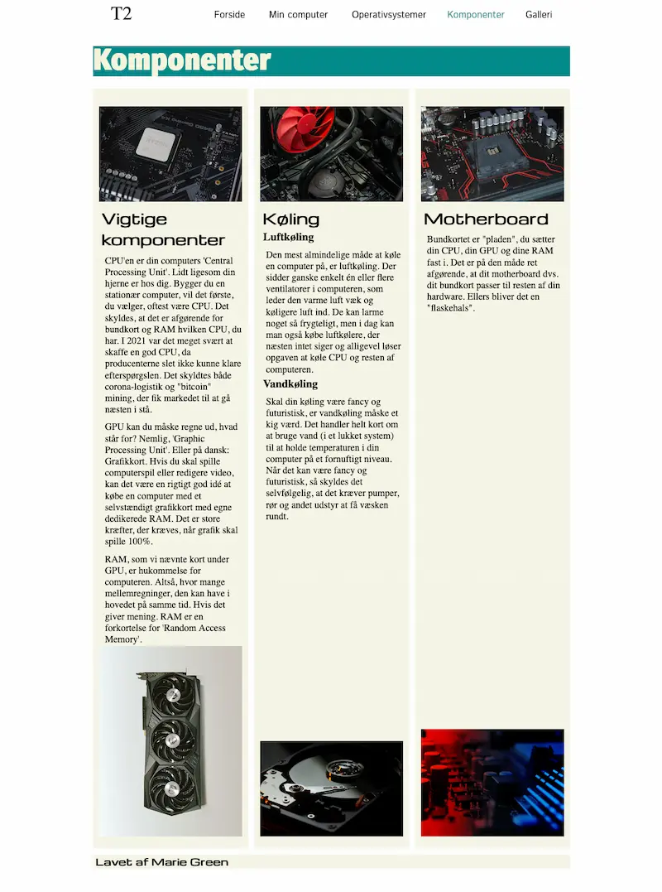
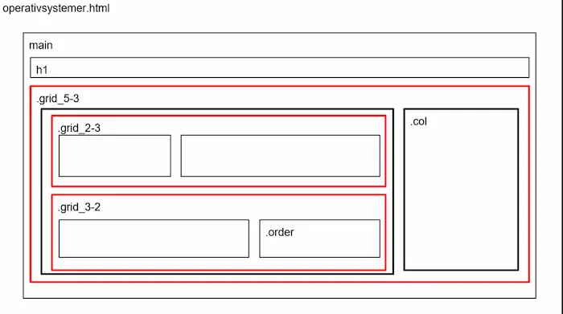

TEMA 2
GRUNDLAEGGENDE
WEB
OPGAVEN - MOBILSITE
På tema 2 skulle vi lære de grundlæggende redskaber så vel som begreber inden for kodning. Vi havde fået et layout for hvordan hver side skulle se ud og derefter skulle vi sætte det op i henholdsvis html og css. Det var specielt vigtigt med denne opgave at vi skulle lærer at kode mobil først og så desktop. Der var specielt fokus på grid og struktur.

Fokuspunkter i dette tema
- At lave en ordentlig mappe struktur.
- Semantisk markup.
- Font/typografi for at personliggøre en hjemmeside.
- Lister til at kunne placere ting i punkter.
- Designprincipper
- Arbejde i grid for at kunne kontrollere hvor elementer skal placeres.
- Billedbehandling for bedre kvalitet, størrelse og for hurtigere loading.
- Media queries for at kunne udvilke en responsiv hjemmeside.
- Last child for at placere ting nederst og Flex for at placere ting ud til siden
- Knapper
Processen
I denne opgave startede jeg med at opbygge en overskuelig mappestruktur, så alle filer som billeder, HTML og CSS var organiseret korrekt. Jeg brugte semantisk markup i HTML’en for at gøre koden mere læsbar og struktureret, og jeg arbejdede med typografi og farver for at matche layoutet. For at lave en brugervenlig navigation og opdeling af indhold benyttede jeg lister og CSS grid, som hjalp med at placere elementer præcist.
Jeg tilpassede layoutet med media queries, så det fungerede både på mobil og desktop, og brugte flex og :last-child til at justere placering og styling af specifikke elementer. Til sidst arbejdede jeg med knapper og billedbehandling, så helheden fremstod ensartet og responsiv.
Løsning
Løsningen blev en responsiv hjemmeside, der følger det udleverede layout. Jeg har opbygget siden med en tydelig grid-struktur, som sikrer, at elementerne placerer sig korrekt både på mobil og desktop. Farver, typografi og billeder er tilpasset designet, og knapperne er gjort brugervenlige. Gennem media queries skifter layoutet smidigt mellem skærmstørrelser, og semantisk HTML gør siden både struktureret og tilgængelig. Samlet set er resultatet en funktionel og visuelt sammenhængende side, der overholder de krav og teknikker, vi har lært.
Færdige hjemmeside
Ved at klikke på knappen her til højre, er det muligt at se den endelig webside.